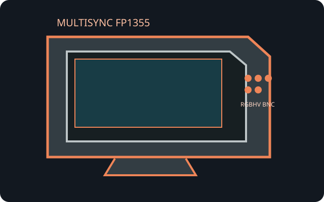

[ INDIVIDUAL COMPONENT // NEC ]
NEC MultiSync FP1355
A large-format MultiSync professional aperture-grille display designed for graphics and workstation use.

IDENTIFICATION: FP1355 is a multiscan analog CRT; there is no fixed native pixel count. The exact supported display mode depends on both vertical refresh and horizontal scan frequency.
Model specifications
| Tube / viewable size | NEC MultiSync FP1355; 22-inch nominal aperture-grille CRT, approximately 20-inch viewable diagonal. |
|---|---|
| Pitch | 0.24 mm aperture-grille pitch. |
| Resolution / timing | No fixed native resolution. Maximum raster is 2048 × 1536; 1600 × 1200 at 85 Hz is a common workstation mode. Scan limits: 30–140 kHz horizontal and 50–160 Hz vertical. Consult the user's manual table for valid combinations. |
| Connectors | HD15 / DE-15 analog RGB input plus five BNC inputs (R, G, B, H-Sync, V-Sync) for separate RGBHV signals. No digital input. |
| Power | Grounded AC mains inlet; average operating power is listed below 150 W, with low-power DPMS states. Confirm voltage/frequency at the rear nameplate for the particular regional version. |
| Host compatibility | Accepts analog RGB over VGA or separate RGBHV BNC at supported timing. Digital-only video outputs require an active converter that generates analog RGB and compatible sync. |
Compatibility and safety notes
Use the BNC input only with correct RGB and separate sync wiring; BNC connector compatibility does not imply component-video decoding. Check geometry and convergence after transport. High voltage and stored charge may remain inside a CRT; do not open this heavy monitor except under qualified service procedures.
Manual and archival references
- NEC MultiSync FP1355 User ManualModel manual including modes, connectors and safety information.
- NEC MultiSync FP1355 manual scanArchived copy of the FP1355 user manual.